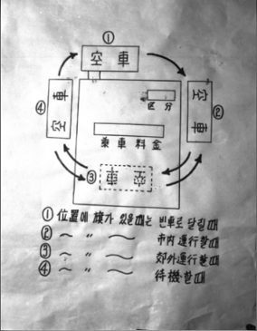
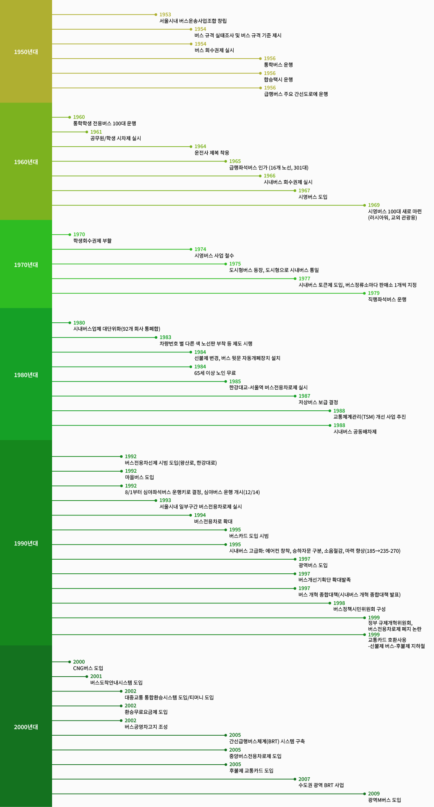

대중교통변천

|  | |||
| 택시요금개정에관한건, 1954 ~ 1955 | 시외합승택시운임제정에관한건, 1957 | 停留場·臺數等을 大幅整備「뻐스」·合乘택시 都心地運行 | 택시 미터기 도안, 1962-04-24 |
| 택시 개인면허 방침, 1967 ~ 1970 | 서울시 공항택시 발대식, 1972-08-01 | 개인 영업택시 추첨, 1976-05-21 | 대한뉴스 제 1165호-개인택시 발대식 |
 |
|||
| 개인택시 면허 허가 | 중형 택시 전시장, 1988-03-22 | 택시요금조정시달, 1989 |

| 시외합승택시운임제정에관한건, 1957 | 버스정류소 차양대, 1966-04-18 | 서울특별시운수사업소설치조례중개정조례, 1967 ~ 1974 | 시영버스 차체검사 완료, 1967-02-27 |
| 2차TSM실시설계보고회개최, | 버스전용차로설치고시, 1997 |